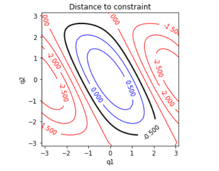
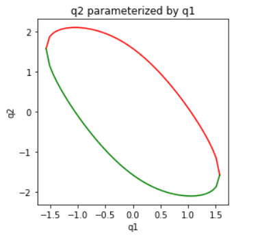

3. Finding all solutions for redundant and parallel robots
In the case of redundant robots, we may wish to determine some representation of the entire IK solution set. This operation is also useful for determining the configuration space of parallel robots.
The set of solutions is known as the self-motion manifold, and instantaneous motions that preserve the task coordinate are known as null-space motions. A manifold is defined as a set that is locally homeomorphic to a disk in Cartesian space. We have already seen the topological spaces Rn , S2 , SO(3) etc., which are also manifolds.
3.1 Redundant Robots
The n−m degrees of freedom remaining in a redundant robot span the dimensions of the self-motion manifold. It is possible to choose n−m joints of the robot, say q1,…,qn−m , and fix them at certain values, and then solve an analytical IK problem to determine the solution for the remaining m DOFs. The former values q1,…,qn−m are known as the independent DOFs while the remainder are known as the dependent DOFs.
The choice of independent DOFs is somewhat arbitrary, but is usually best chosen to lead to simple analytical IK solutions for the dependent DOFs. In any case, the independent joints parameterize the self-motion manifold. The main difficulty in expressing this solution space is to determine a suitable domain of the independent DOFs such that an analytical solution exists for the depending DOFs.
As a very simple example, let us consider the planar 2R robot with a task where only the x coordinate of its end effector is constrained to some value xD .
That is, we wish to determine the set of solutions to the constraint
xD=c1(L1+c2L2)−s1s2L2=c1L1+c12L2
c12=cos(q1+q2) and with xD fixed at some value. Plotted in the plane (q1,q2) , the solution set is an ovoid-like 1D curve in 2D space.

To characterize this set, we could choose q1 as the independent DOF and then solve for q2 analytically. Doing so, we find:
q2=±cos-1((xD−c1L1)/L2)−q1.
The top of the manifold is given by the positive cosine term, while the bottom is the negative cosine term. Since the domain of cos−1 is [−1,1] , solutions only exist for the range of q1 such that |xD−c1L1|≤L2 , or in other words, (xD−L2)/L1 ≤ c1 ≤ (xD+L2)/L1 .

We note that the independent DOF could have also been chosen to be q2 . In this case, we must find a solution q1 to:
s1(−s2L2)+c1(L1+c2L2)−xD=0
assuming the parenthesized terms are fixed. This type of equation:
asinθ+bcosθ+c=0
hence the final solution is:
The inverse cosine only has a solution when x2D≤L21+L22+2c2L1L2 , or in other words, c2 ≥ (x2D−L21−L22)/(2L1L2) .
In more complex cases, particularly with n−m≥2 , the domain of valid independent DOFs becomes more geometrically complex and difficult to characterize.
3.2 Redundant Robots
To define the configuration space of parallel mechanisms, it is useful to first define an open, possibly branched chain by first imagining certain loop closure constraints as being broken, and then treating the broken constraints as IK tasks. Then, n−m of the open DOFs may be represented as independent DOFs while the remaining m are treated as dependent DOFs.
Some of the joints of the mechanism will be independently actuated. It is convenient to choose a convention of independent vs dependent DOFs matching the actuated joints, which are also known as active joints, vs non-actuated joints, which are also known as passive joints. It is also prudent to design joint stops so that singularities of the passive chain are never reached, because otherwise the mechanism may "lock up" or exhibit non-deterministic behavior as singularities are reached.
 Previous
Previous